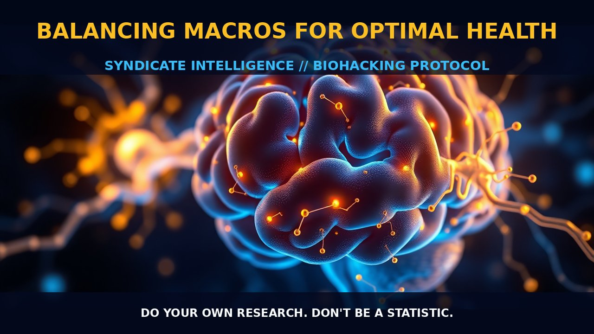

Balancing Macros For Optimal Health

MECHANICS
Understanding the mechanics of proper nutrition involves delving into how different macronutrients and micronutrients interact within our bodies to support optimal health and well-being. The body requires a balanced mix of quality carbohydrates, proteins, lipids, and nucleic acid precursors to function at its best. Carbohydrates provide energy for cellular processes, particularly in the brain; proteins are essential for building and repairing tissues; lipids serve as structural components in cell membranes and as signaling molecules; and nucleic acids act as the building blocks of DNA and RNA, which are crucial for genetic information transfer.
Quality carbohydrates should be derived from whole foods like fruits, vegetables, and grains that are rich in fiber. Fiber helps regulate digestion and promotes gut health by feeding beneficial bacteria. Whole food sources also contain a variety of vitamins, minerals, and antioxidants that work synergistically to enhance nutrient absorption and utilization. Proteins, on the other hand, should come primarily from lean animal proteins like chicken, fish, and eggs or plant-based sources such as legumes and tofu. These provide essential amino acids necessary for muscle growth and repair.
The quality of lipids is also paramount in a balanced diet. Focus on incorporating healthy fats found in avocados, nuts, seeds, and fatty fish that are rich in omega-3 fatty acids. Omega-3s have anti-inflammatory properties and support brain health by modulating neurotransmitter signaling pathways such as those involving NMDA receptors and dopamine systems. Additionally, nucleic acid precursors like ribonucleotides can be obtained from dietary sources including meats, eggs, dairy products, and leafy green vegetables. These compounds are vital for DNA replication and repair processes.
BIOLIGICAL LEVERAGE
The biological leverage of a balanced diet lies in its ability to maintain homeostasis and support various physiological functions that underpin optimal health. Proper nutrition can influence cellular metabolism by providing the necessary substrates for energy production, which is crucial for maintaining cognitive function and physical performance. Carbohydrates are particularly important as they serve as the primary fuel source for the brain, while proteins ensure adequate synthesis of neurotransmitters and enzymes required for efficient neural communication.
Fatty acids play a critical role in cell membrane integrity and fluidity, influencing signal transduction pathways that regulate cellular responses to environmental stimuli. For instance, omega-3 fatty acids are known to modulate inflammatory cytokine production by inhibiting the activity of pro-inflammatory eicosanoids through cyclooxygenase (COX) enzyme inhibition. This anti-inflammatory effect can benefit individuals with chronic conditions like cardiovascular disease and neurodegenerative disorders.
Moreover, nucleic acid precursors are essential for DNA replication and repair, which are critical processes in maintaining genomic stability and preventing mutations that may lead to cellular dysfunction or cancer development. A diet rich in these components supports the body's natural defense mechanisms against oxidative stress and promotes longevity by optimizing mitochondrial function and enhancing antioxidant defenses.
TACTICAL IMPLEMENTATION
To implement a balanced diet effectively, focus on incorporating diverse food sources that provide essential macronutrients and micronutrients. Aim for low-to-moderate amounts of quality carbohydrates from whole foods like sweet potatoes, quinoa, and leafy greens. These should be consumed throughout the day to maintain steady blood sugar levels and energy supply.
Protein intake should vary depending on individual needs but generally includes lean animal proteins and plant-based sources rich in essential amino acids. Incorporating a variety of protein-rich foods ensures adequate consumption of all nine essential amino acids, which are not synthesized by the body and must be obtained through diet.
Healthy fats from avocados, nuts, seeds, olive oil, and fatty fish should also be included regularly to support cardiovascular health and cognitive function. Fatty acids like omega-3s help maintain cell membrane fluidity and promote neuronal signaling pathways involved in mood regulation and memory consolidation.
Lastly, ensure a regular intake of nucleic acid precursors from dietary sources such as meats, eggs, dairy products, and leafy greens. These compounds support DNA replication and repair processes critical for cellular health and longevity.
Do your own research. Don't be a statistic.
Prostar Life Hack
These should be consumed throughout the day to maintain steady blood sugar levels and energy supply.
[ AUTHOR: LEAD TECHNICAL RESEARCHER ]